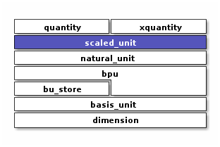

Scaled Unit
A dimensionless multiple of a natural_unit
Context
Introduction
Extension of natural_unit to enable representing the intermediate result of multiplication (or division) of natural units.
represents a (dimensionless) multiple of a cartesian product of basis units.
constexpr implementation
limited support for fractional dimensions such as time^-1/2
![object area_per_time<<scaled_unit>>
area_per_time : outer_scale_factor = 3048/10000
area_per_time : outer_scale_sq = 1.0
area_per_time : natural_unit = m2_per_min
object m2_per_min<<natural_unit>>
m2_per_min : n_bpu = 2
m2_per_min : bpu_v[]
object m2<<bpu>>
m2 : native_dim = dim::distance
m2 : scalefactor = 1/1
m2 : power = 2/1
object min<<bpu>>
min : native_dim = dim::time
min : scalefactor = 60/1
min : power = -1/1
area_per_time o-- m2_per_min
m2_per_min o-- m2
m2_per_min o-- min](_images/plantuml-5ba29ee31c55453a46b5c7f29cfcad4ff4c55798.png)
scaled unit after (u::meter * u::foot / u::minute)
Scaled units with non-unity outer scalefactors arise as intermediate results of quantity arithmetic
Motivation
Consider multiplying two units:
using namespace xo::qty;
constexpr auto u_prod = u::meter * u::kilometer;
How should we represent the product?
We don’t want to mix units. Instead we consolidate on a common unit; to do this we accumulate a product of conversion factors from such consolidation.
For example:
static_assert(u_prod.n_bpu() == 1);
static_assert(u_prod[0].bu() == detail::bu::meter);
static_assert(u_prod[0].power() == power_ratio_type(2));
static_assert(u_prod.outer_scale_factor_ == xo::ratio::ratio<int64_t>(1000));
static_assert(u_prod.outer_scale_sq_ == 1.0); // used if fractional dimension
Here we accumulate 1000, from converting kilometers to meters.
Division works similarly. In this example dimension cancel, but we still have a non-unity conversion factor.
namespace u = xo::qty::u;
constexpr auto u_div = u::meter / u::kilometer;
// dimensionlesss result
static_assert(u_prod.n_bpu() == 0);
static_assert(u_prod.outer_scale_factor_ == xo::ratio::ratio<int64_t>(1,1000));
static_assert(u_prod.outer_scale_sq_ == 1.0);
When multiple dimensions needing conversion are involved, scalefactors accumulate:
namespace u = xo::qty::u;
constexpr auto u2_prod = u::meter * u::hour * u::kilometer * u::minute;
static_assert(u2_prod.n_bpu() == 2);
static_assert(u2_prod[0].bu() == detail::bu::meter);
static_assert(u2_prod[1].bu() == detail::bu::hour);
static_assert(u2_prod.outer_scale_factor_ == xo::ratio::ratio<int64_t>(50,3));
static_assert(u2_prod.outer_scale_sq_ == 1.0); // used if fractional dimension
Here the 50/3 result comes from multiplying 1000/1 (converting kilometers -> meters)
by 1/60 (converting minutes -> hours)
Class
Member Variables
Warning
doxygengroup: Cannot find group “scaled-unit-instance-vars” in doxygen xml output for project “xodoxxml” from directory: /home/roland/proj/xo/xo-unit/.build-ccov/docs/dox/xml
Type Traits
Warning
doxygengroup: Cannot find group “scaled-unit-type-traits” in doxygen xml output for project “xodoxxml” from directory: /home/roland/proj/xo/xo-unit/.build-ccov/docs/dox/xml
Access Methods
Warning
doxygengroup: Cannot find group “scaled-unit-access-methods” in doxygen xml output for project “xodoxxml” from directory: /home/roland/proj/xo/xo-unit/.build-ccov/docs/dox/xml
General Methods
Warning
doxygengroup: Cannot find group “scaled-unit-general-methods” in doxygen xml output for project “xodoxxml” from directory: /home/roland/proj/xo/xo-unit/.build-ccov/docs/dox/xml
Operators
Warning
doxygengroup: Cannot find group “scaled-unit-operators” in doxygen xml output for project “xodoxxml” from directory: /home/roland/proj/xo/xo-unit/.build-ccov/docs/dox/xml